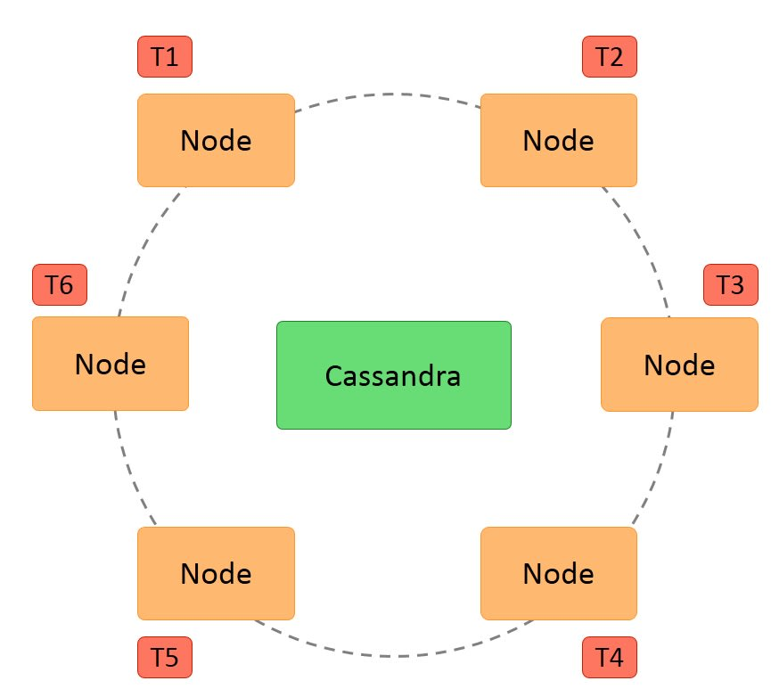
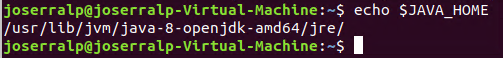
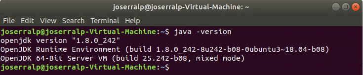
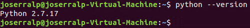
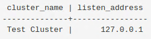

This is the first post in the Cassandra series, where we will introduce the Cassandra database system and take a look at its features and installation methods.
Modified 2020-03-18
Other posts in this series:
- Cassandra: an Introduction (this post)
This post is co-authored wih Classmate.
¶Purpose of technology
Apache Cassandra is a NoSQL, open-source, distributed “key-value” database. It allows large volumes of distributed data. The main **goal **is provide linear scalability and availabilitywithout compromising performance. Besides, Cassandra supports replication across multiple datacenters, providing low latency.
¶How it works
Cassandra’s distributed **architecture **is based on a series of equal nodes that communicate with a P2P protocol so that redundancy is maximum. It offers robust support for multiple datacenters, with asynchronous replication without the need for a master server.
Besides, Cassandra’s data model consists of partitioning the rows, which are rearranged into different tables. The primary keys of each table have a first component that is the partition key. Within a partition, the rows are grouped by the remaining columns of the key. The other columns can be indexed separately from the primary key.
These tables can be created, deleted, updated and queried****at runtime without blocking each other. However it does not support joins or subqueries, but instead emphasizes denormalization through features like collections.
Nowadays, Cassandra uses its own query language called CQL (Cassandra Query Language), with a similar syntax to SQL. It also allows access from JDBC.
 _ Cassandra architecture _
¶Features
- Decentralized: there are no single points of failure, every **node **in the cluster has the same role and there is no master node, so each node can service any request, besides the data is distributed across the cluster.
- Supports **replication **and multiple replication of data center: the replication strategies are configurable.
- **Scalability: **reading and writing performance increases linearly as new nodes are added, also new nodes can be added without interrupting application execution.
- Fault tolerance: data replication is done **automatically **in several nodes in order to recover from failures. It is possible to replace failure nodes****without making inactivity time or interruptions to the application.
- **Consistency: **a choice of consistency level is provided for reading and writing.
- MapReduce support: it is **integrated **with Apache Hadoop to support MapReduce.
- Query language: it has its own query language called **CQL (Cassandra Query Language) **
¶Corner in CAP theorem
Apache Cassandra is usually described as an “AP” system because it guarantees availability and partition/fault tolerance. So it errs on the side of ensuring data availability even if this means sacrificing consistency. But, despite this fact, Apache Cassandra seeks to satisfy all three requirements (Consistency, Availability and Fault tolerance) simultaneously and can be configured to behave like a “CP” database, guaranteeing consistency and partition/fault tolerance.
 Cassandra in CAP Theorem
Cassandra in CAP Theorem
¶Download
In order to download the file, with extension .tar.gz. you must visit the download site and click on the file “https://ftp.cixug.es/apache/cassandra/3.11.6/apache-cassandra-3.11.6-bin.tar.gz”. It is important to mention that the previous link is related to the 3.11.6 version.
¶Installation
This database can only be installed on Linux distributions and Mac OS X systems, so, it is not possible to install it on Microsoft Windows.
The first main requirement is having installed Java 8 in Ubuntu, the OS that we will use. Therefore, the Java 8 installation is explained below. First open a terminal and execute the next command:
sudo apt update
sudo apt install openjdk-8-jdk openjdk-8-jre
In order to establish Java as a environment variable it is needed to open the file “/.bashrc”:
nano ~/.bashrc
And add at the end of it the path where Java is installed, as follows:
export JAVA_HOME=/usr/lib/jvm/java-8-openjdk-amd64/jre/
export PATH=$PATH:$JAVA_HOME/bin
At this point, save the file and execute the next command, note that it does the same effect re-opening the terminal:
source ~/.bashrc
In order to check if the Java environment variable is set correctly, run the next command:
echo $JAVA_HOME
 $JAVAHOME variable
Afterwards, it is possible to check the installed Java version with the command:
java -version
 Java version
The next requirement is having installed the latest version of Python 2.7. This can be checked with the command:
python --version
If it is not installed, to install it, it is as simple as run the next command in the terminal:
sudo apt install python
Note: it is better to use “python2” instead of “python” because in that way, you force to user Python 2.7. Modern distributions will use Python 3 for the «python» command.
Therefore, it is possible to check the installed Python version with the command:
python --version
 Python version
Once both requirements are ready, next step is to unzip the file previously downloaded, right click on the file and select “Extract here” or with the next command, on the directory where is the downloaded file.
tar -zxvf apache-cassandra-x.x.x-bin.tar.gz
In order to check if the installation is completed, you can execute the next command, in the root folder of the project. This will start Cassandra in a single node.
/bin/cassandra
It is possible to make a get some data from Cassandra with CQL (Cassandra Query Language). To check this execute the next command in another terminal.
/bin/cqlsh localhost
Once CQL is open, type the next sentence and check the result:
SELECT cluster_name, listen_address from system.local;
The output should be:
 Sentence output
Finally, the installation guide provided by the website of the database is attached in this installation guide.